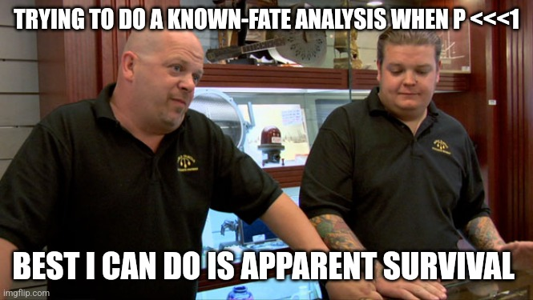
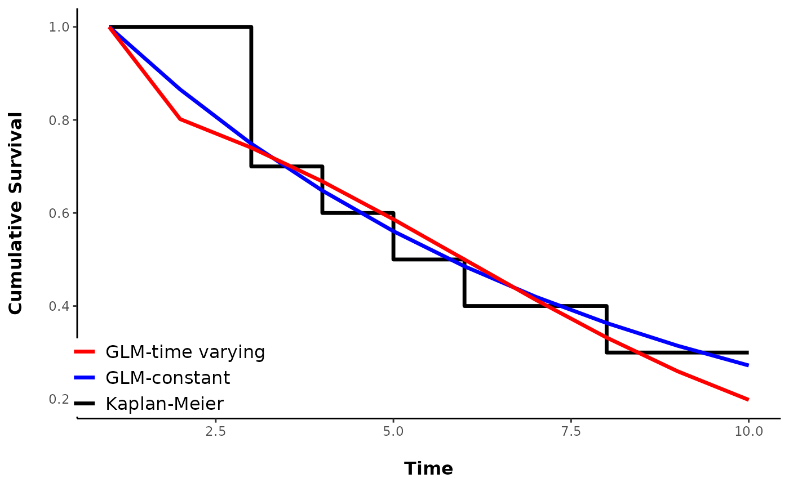
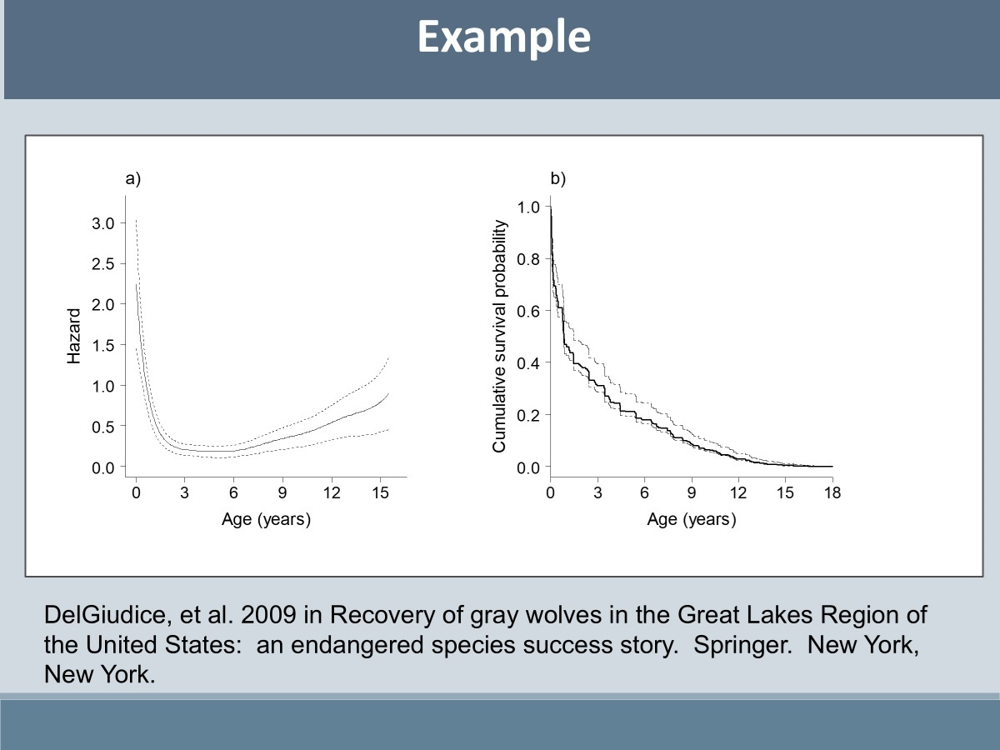
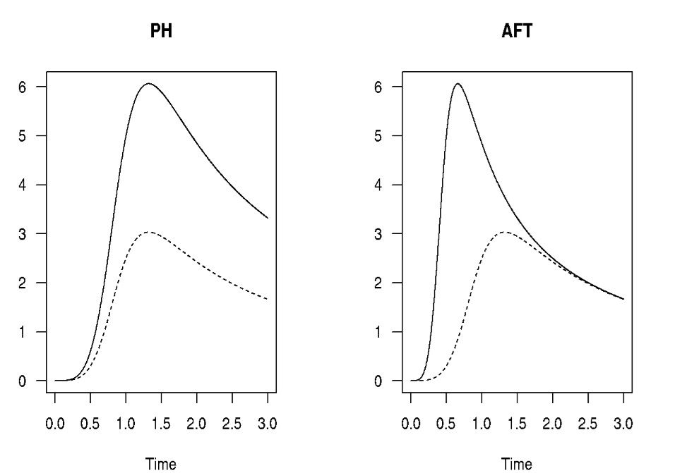
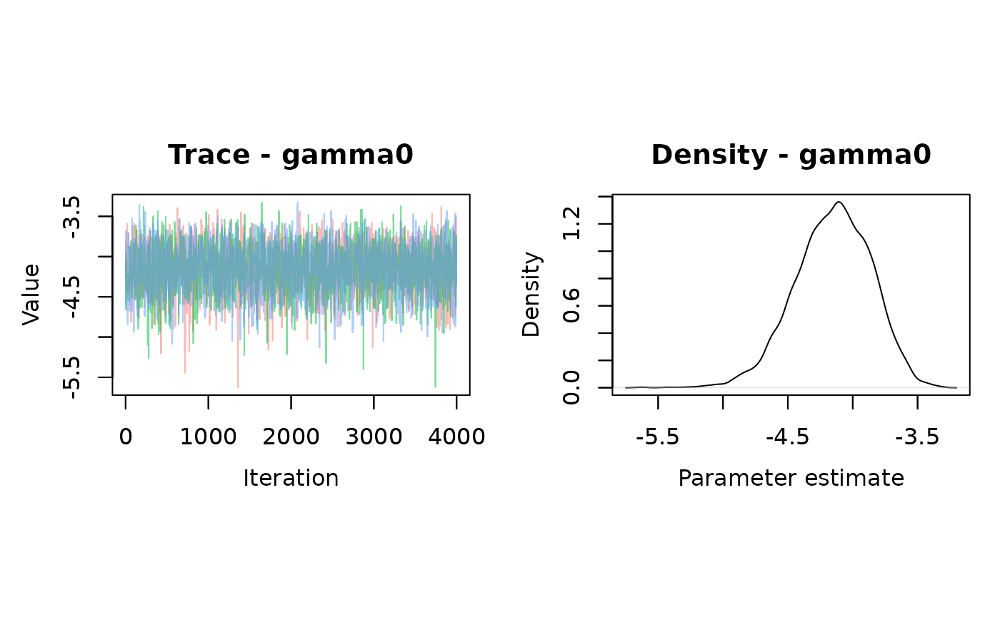
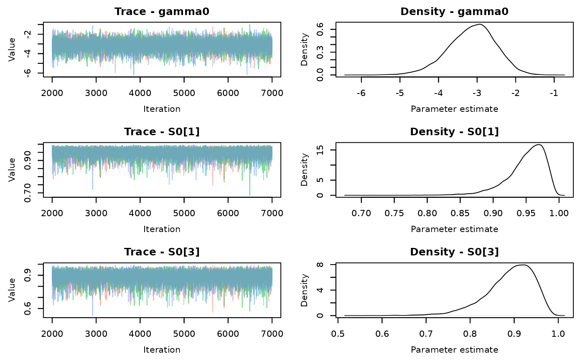
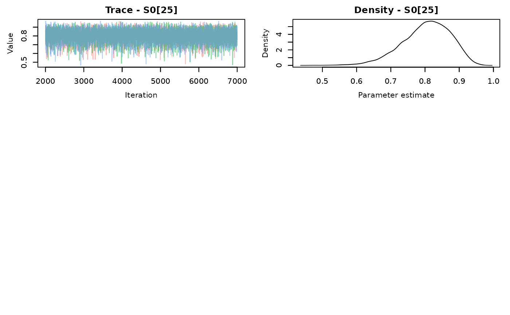
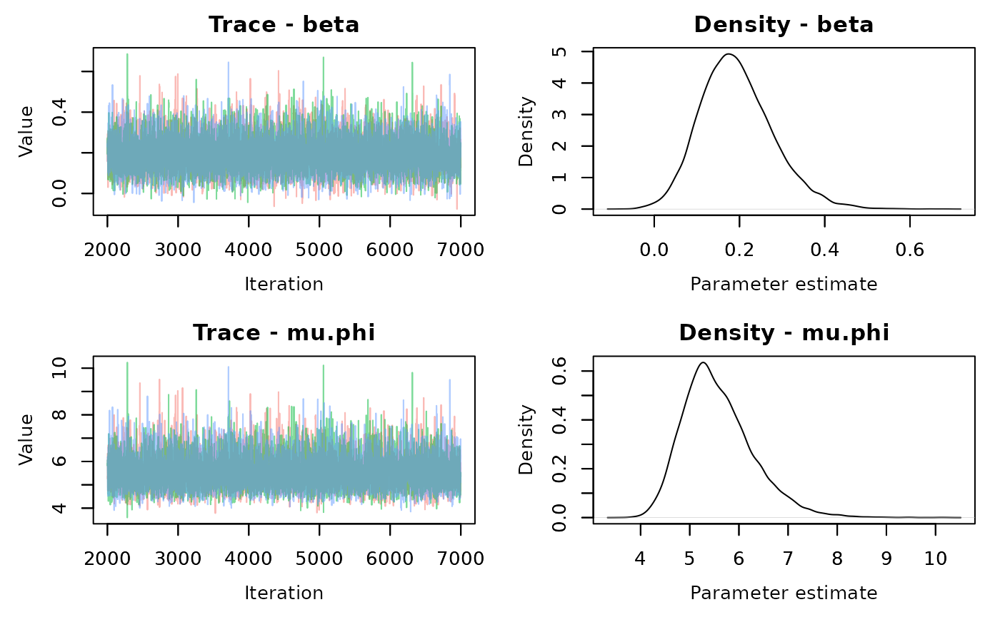

Time To Event and Known-fate (Survival) Analyses
Tim Lyons
Last Updated 12/03/25
Source:vignettes/TTE-Advanced.Rmd
TTE-Advanced.RmdOverview
Time-to-event analysis can be very broad and encompasses a variety of methods. Most of us will probably encounter this type of data as a survival analysis and I tend to use examples from that application, but it is much more flexible than that. At it’s core time to event data are any data that:
- Have a known or well-defined “origin” time, or start time when the sample (individual) is at risk of the event of interest happening.
- The quantity of interest is the time to an event occurs (how long before X happens) and how covariates affect that time.
- The event must be categorical, either a Bernoulli variable (live/dead) or multinomial (live, dead from cause A, dead from cause B…) and you must be able to determine an event happened, if an event happened (i.e. known-fate).
Ecologists typically encounter it as a survival analysis where the event of interest is death, but it can be almost anything. In ecology, it’s been used to model resources selection (First-passage-time1), epidemiology and disease dynamics2, and breeding ecology. 3 It’s also at the core of the space-to-event model of estimating animal density.4 Importantly, the event of interest doesn’t just need to be something that can only occur once (like death), the TTE framework can accommodate recurring events.
 Still, we’ll focus on the application to survival analysis since it’s
the most common and we can use other methods that folks might be more
familiar with to provide context. With that being said, within survival
analysis, it might often feel like we’re talking in circles about why to
use one method over another if they all can functionally accomplish the
same thing (there is generally a GLM analog to most of these things).
Still, we’ll focus on the application to survival analysis since it’s
the most common and we can use other methods that folks might be more
familiar with to provide context. With that being said, within survival
analysis, it might often feel like we’re talking in circles about why to
use one method over another if they all can functionally accomplish the
same thing (there is generally a GLM analog to most of these things).
What links TTE models (in survival analysis) to GLMs using a logit or probit link is, a TTE analysis models the time to an event occurring, whereas GLMs model the “probability of” an event occurring. Time is explicit in TTE, whereas other analyses, you might include it as a covariate. I’d argue that a hazard model is more confusing to use, unless you really do have a natural or logical “origin” time.
Key Concepts
There are some key concepts that are important to understanding TTE analyses and how it relates to other analyses.
Censoring and Truncation
Censoring and truncation are common to survival analyses and you’ve dealt with it whether you’ve used TTE analyses or a GLM (e.g. logistic exposure).
Interval Censoring
The most common method of censoring is interval censoring. This is where you don’t know the exact event time, just that occurred sometime during an interval during the observation. So unless you are checking nests or your radio-marked individuals every day, you will have interval censored data. If you are fitting a GLM with a logit link, you probably dealt with interval censoring by using the logistic exposure link or another technique (like a cloglog link + offset). If you are familiar with Program MARK and have used the known-fate module there, the concept of interval censoring might seem confusing (it is for me at least) because, if you lose track of an individual, you code an interval as ‘00’ to indicate an individual was missing, and thus, censor that time period. They refer to it as interval censoring, but it’s not the same “interval censoring” as is mentioned in most other texts regarding TTE or survival analyses. It’s more accurately called interval truncation and DeCesare et.al (20155) give a good explanation. It’s an artifact of Program MARK using a model that does not permit interval censoring. They even tell you that you should use their nest-survival module if you have interval censoring.
Compare that to TTE analysis or almost any other analysis we’ll use where interval censoring is allowed. In this, you do not need to drop these observations. If the animal is observed detected dead later on, the interval censoring handles the uncertainty as to when mortality occurred. If you observe them alive later you know they survived. If you never encounter them dead or alive again, it’s just right censoring, and you are relying on the assumption that censoring is not informative. This also requires that the probability of detecting an individual doesn’t depend on their fate-the probability of finding that individual that went missing is the same, regardless if you are finding them dead or alive.
Right Censoring and informative censoring
If you lose track of an individual and never find them (alive or dead) or they haven’t died yet when the study ends, this is right-censoring. In the latter case, it’s called fixed censoring, whereas the former, it’s assumed random. That is, dying doesn’t cause you to loose track of an individual. If this censoring is informative (radio transmitters fail because they are destroyed by cars/people/predators) then your survival estimate will be biased. This is true regardless if you analyze the data in a TTE framework or a logistic regression framework. If it is random (or at least nearly) then it doesn’t matter. If you do lose track of a lot of individuals without knowing their fate, it’s recommended you don’t use an approach that relies on accurately knowing it.

Left Censoring and Truncation
Left censoring doesn’t make sense in a survival analysis, it means the event of interest occurred before that individual became part of the study. This is nonsense is it’s death. Left censoring undoubtedly occurs in our data sets, but there is nothing we can typically do, statistically speaking, to account for it. What we typically have in our data sets is truncation.
Left-truncation applies to individuals not observed from their origin time, We experience this all the time with wildlife data; individuals have to survive long enough for us to capture them.
Truncation can be accommodated (in a TTE analysis or a GLM) if you specify a time at capture in a logit model or an entry time (relative to origin). This is where it gets hard for me to wrap my head around. The whole issue of left trunction or censoring only really makes sense if you really do have an “origin time”, otherwise we often just get taught ways to avoid having to deal with this. Hazard models accommodate left truncation by only considering the interval for when the individual was first observed. In a GLM, we generally would treat it as “heterogeneity” and deal with it by including an appropriate covariate, such as age-at-capture, and then maybe including age as a time-varying covariate.
Clearly this doesn’t correct for the fact we might not be observing individuals in some age/stage classes. There really isn’t a statistical approach to “fix” this-it’s a sampling issue. That’s why we generally talk about survival estimates for specific age-classes or at stages.
Methods
A quick reminder, all of these methods are used to derive a “survival” estimate, even though you are not modeling survival directly (e.g. TTE).
Modeling survival vs Hazards
GLM approaches -Logit link
When talking about survival or a time-to event analysis it’s helpful to start talking about using a GLM to estimate survival (or mortality) because it’s probably what most folks are familiar with. The first big difference is that using a GLM, you’re modeling the probability of the event occurring over some interval, not how long before it occurs. We generally use this approach (as opposed to a TTE method), because we really don’t have the ability to define an origin time, typically because individuals are entering and leaving the study at varying time points and/ or because we can’t accurately age individuals.
In this approach, your data is probably a table with, at minimum, rows equal to the number of individuals x the number of intervals and a column indicating if that individual survived or died during that interval (e.g. 1/0). If your intervals are regular and equal in length you can use generic, built-in methods for estimating survival (e.g. logit link). If you are interested in modeling survival as a function of time (age, day of year), you typically deal with it by using a interval-specific covariate. Left truncation can be dealt with in this way, interval truncation can be handled by omitting those intervals where you were unable to verify the status of an individual (but might not be necessary), and right censoring is handled implicitly by an individual no longer appearing in the records.
If the checks are at irregular intervals, or you experience more than a trivial amount of interval truncation, then you are better off accounting for the variable length of time in each interval using the logistic exposure method.
Kaplan-Meier
Kaplan-Meier is called a non-parametric method because any of the quantities you describe (cumulative survival, period survival) are obtained by simple arithmetic where:
\[ S_t=\frac{N_{alive\ at\ t}}{N_{alive\ t-1}}\]
You’re not using a linear model to estimate parameters. If you only use discrete covariates, then a logit model as described above is equivalent to a Kaplan-Meier estimate. However, a logit model gives you more flexibility, namely in the types of covariates you can include. Furthermore, Kaplan-Meier estimates assume there is no interval censoring. It’s generally your best bet if you don’t have very many individuals in your data set.
Plots of Kaplan-Meier estimates typically show cumulative survival probability as a function of time in a stair-step pattern. Note that this is not implying that survival probability varies with time. Kaplan-Meier estimates survival at each time step, but it is visualized as the proportion of individuals remaining at time T, which is equivalent to \(S^T\), where \(S\) is the 1-unit survival probability.

You can see that the GLM- constant survival estimates the cumulative survival probability as being lower than observed in the data, until the end, which is what the KM estimate shows. Nevertheless, they all produce the same average daily survival rate. The GLM that allowed time-varying survival is a better approximation of the KM curve, but also may just be overfitting, as the data for the plot were simulated using a constant survival probability.
Log-Log link
An alternative to using logit-link regression is to use a log-log link or:
\[ S=exp(-exp(X\beta))\\ and\ the\ inverse\\ X\beta=log(-log(S))\]
where \(S\) is the survival probability and \(X\beta\) is the linear predictor. This approach gives the same interpretation (hazard ratios) of the \(\beta_k\) regression coefficients as in proportional hazard models. Often this is preferable to using the logit link because hazards ratios (the relative difference in mortality) don’t change whether your model is talking about weekly, monthly, or annual survival. Odds ratios will differ, which may be just confusing or worse, misleading. In R, you have to use the complementary log-log link, which is equivalent to replaceing \(S\) with \(M\), as that is what \(X\beta\) predicts. In R, you still code your data as 1=alive, 0=dead, but you are essentially modeling the 0’s when using that data structure and the cloglog link.
Interval censoring can be accommodated when using the logit-link by using the logistic-exposure link, and including an offset for the number of exposure days in each interval when using the cloglog link.
Modeling time-to-event
As the name implies, you’re not estimating the probability an event occurs at a specific interval (like in a GLM), but instead the amount of time it takes for an event to happen. It gets discussed as modeling a process in continuous time (TTE) vs. discrete time. Thus, instead of calculating the probability an event occurs in an interval, the TTE is estimating the number of events/deaths a “immortal individual” might experience over some time frame. Coming from a background modeling nest survival in discrete time, the big mental flip for me in wrapping my head around this has been stopping thinking about my analyses like graphs of DSR and instead, thinking about graphs that show cumulative survival. It’s that curve, called a survivor function that TTE is estimating. The derivative of that curve at any time point is \(h(t)\) or the hazard function.
The math to develop the survivor function is fundamentally different then using something like logstic (exposure) regression. When using the logit link, you can develop the equivalent information by computing the product of the logit-transformed linear predictors
\[Discrete\ time ,\ logit\ link\\ S_{n|1}=\prod_{t=1}^{N}S_t=S_1\cdot S_2\cdot S_3...S_n\\ S_t=\frac{exp(X\beta)}{1+exp(X\beta)}\]
and what it looks like if we used a proportional hazards model
\[TTE\ or\ Continuous\ Time-Proportional Hazards\\ S_{1|n}=exp(-\sum_{t=1}^{N}{exp(X\beta)})\]
It doesn’t look like much different, but it makes some math things easier. Particularly, as mentioned before, comparing the effect of a covariate on the outcome at a different unit than what you initially measured \(t\) on. It also becomes easier to model a wider of nonlinear effects time or age on survival than is typically available in a GLM (e.g. linear, quadratic, cubic…). The figure to the right demonstrates that. It comes from a TTE workshop at the TWS meeting in Reno in 2019, though the data are on a long-term deer survival study in northern MN.

The textbook definition of the hazard is the instantaneous rate
of mortality. If the hazard is high, mortality is high and vice versa.
TTE focuses on estimating the timing of events regardless of actual
procedure.
The simplest form of a TTE linear model is \[h(t) = \lambda_0 \cdot \lambda_t\] This is the hazard at time \(t\), is the product of some baseline hazard\(\lambda_0\), and covariates \(\lambda_t\) that can be modeled using a log link.
\[\lambda_t=exp(\beta_1X_1+\beta_2X_2...\beta_kX_k)\]
This particular formulation is a proportional hazards (PH) model. Proportional hazards models can be semi-parametric, where you don’t try to specify a distribution of the baseline hazard, or fully parametric where you do.
The distribution used to specify the baseline hazard can have a dramatic effect on the shape of the hazard curve and whether your model is still a proportional hazards model, or if it now becomes an accelerated-failure-time (AFT) model, or something else.
Semi parametric
The semi-parametric hazard model is synonymous with Cox’s proportional hazard. It is not, however, the only version of a proportional hazard model. Cox gets his name attached because he came up with a slick way to estimate the regression coefficients of \(\lambda_t\) without ever having to estimate \(\lambda_0\), using a partial likelihood. People don’t really like trying to have to specify that baseline so it’s often preferable to use this approach. However, a true Cox’s proportional hazard model doesn’t work with interval censoring, so most applications will probably use a parametric hazards model. For example, if you have interval censoring and want to use a proportional hazard model, you will actually fit a parametric hazard model, using an exponential baseline hazard.
Important to note, like the cloglog link, you are modeling mortality, so negative coefficients (log-hazard ratios) mean a negative association with mortality. It’s also worth noting that without specifying some kind of distribution for the baseline hazard, you can only get a survivor curve by estimating the baseline with non-parametric methods. This is hard, and using a parametric, exponential model is the equivalent. So it’s more straightforward to just do that!
Parametric Hazards
Parametric hazards have you specify a distribution of the baseline hazard. Proportional hazards (PH), proportional odds (PO), and accelerated-failure-time (AFT) models are types all parametric TTE models. The difference in these models is:
- the link used to model the hazard
- whether the hazard changes through time.
Another way to see some of these connections is to re-write the time to event model as a linear function of the times of the event, not the hazard:
\[log(T)=\beta_0+\beta_1X_1+\beta_2X_2...+\sigma\epsilon\]
where an random disturbance term \(\epsilon\) follows some distribution. Most software routines don’t estimate the variance of \(\epsilon\) but hold it constant and estimate \(\sigma\) as a scaling parameter instead. As is described in the Paul Allison SAS survival book, depending on the distribution you assume for \(\epsilon\), there is a corresponding hazard function:
- if \(\epsilon\) is extreme-value (exponential distribution) and \(\sigma\) is fixed at one then T is exponentially distributed and gives a hazard function:
\[log(h(t))=\beta_0^*+\beta_1^*X_1...\beta_k^*X_k\]
This is the functionally the same hazard model used in Cox’s PH but now with an intercept. This is an exponential model, or a constant hazard because nothing in here specifically models the hazard as a function of time. If we did have a term here that was a function of time, it would be an AFT model.
- if \(\epsilon\) is extreme-value (exponential distribution) but \(\sigma\) isn’t fixed at 1, then T follows a Weibull distribution and, per the SAS survival book:
\[log(h(t))=\alpha\log(t)+\beta_0^*+\beta_1^*X_1...\beta_k^*X_k\]
This is now an AFT, depending on the parameter value of \(\alpha\)(see pp. 20-21 in SAS survival book). In this case, \(\alpha\) controls how the hazard varies across time, ensuring that the event times T follow a Weibull distribution. If \(\alpha\) is just 0, then the hazard is constant through time and we’re back at the exponential distribution.
Fun fact, the Weibull above is both and AFT and a PH model, and it’s the only form that can both. That’s because, in the equation above, you could think of the \(\alpha\log(t)\) as a baseline hazard
Another way to write the Weibull hazard can be found in handout 9 here is as:
\[h(t)=\lambda p t^{p-1}\\ log(h(t))=log(\lambda)+log(p)+(p-1)log(t)\\ log(h(t))=\alpha\ log(t) +\beta_0^*+\beta_1^*X_1...\beta_k^*X_k\]
where \(p\) is \(\frac{1}{\sigma}\) from the \(log(T)\) equation above. So it looks like the difference between the two resources is \(\alpha \sim p-1\) and the value of log(p) seems to end up in the \(\beta_0\)?
Other forms include the Log logistic
\[h(t)=\frac{\lambda p t^{p-1}}{1+\lambda t^p}\] which gives a proportional odds model. All of these are AFT models
Typically, however, when you are fitting an AFT model you’re not writing a linear model for the hazard, your linear model is for \(log(T)\) and you coefficients will be expressed as their effect on survival time, not the hazard.
What makes a model an AFT and/or PH?
These graphs from here
help visually demonstrate it, as does the lecture notes found here.
The PH has proportional hazards, but not a constant hazard rate. In
short a proportional hazards model assumes that the hazard ratio doesn’t
change as time changes. A graph of the hazard of two groups over time
would be parallel, with the peak in the hazard occurring at the same
time. In the AFT, the hazard peaks earlier or later for one group. So
it’s a difference of up/down vs. left/right. This is what is meant when
books/slides say an AFT “stretches” time in an AFT.

The other big difference is that when you fit an AFT model, you
will code it up (or an existing package) where you put your linear model
on survival time, not the hazard. This is because anything other than an
exponential distribution gets really messy looking on the hazard scale.
You can still derive it, but it’s more straight forward to write the
linear model for \(T\), not \(h(t)\)
Some AFT models are also PH models (e.g. Weibull), but most aren’t. They don’t need to be. The whole value of AFT models are for when you do not meet the proportional hazards assumption (i.e. the hazard ratio changes through time). Still in an AFT, you need to specify a baseline distribution for T.
- You typically won’t use an AFT with left truncation-why? You need those data to help fit the curve/ determine the appropriate shape of the baseline hazard. But if you want to be risky and specify one anyway, hope you’re right, you can “predict” outside of your sample the survival times of those individuals you never observed.
Because it’s hard to know what distribution to use for that baseline hazard (i.e. how does the hazard vary with time) it’s usually easier to turn an exponential PH model (which is not technically an AFT, as it has a constant baseline hazard) and throw in tricks to account for temporal variation or non-constant hazard ratios (see the slides from Reno). This approach works and is probably what you will end up doing most of the time, but as it gets more complicated (e.g. time-varying coefficients, piecewise exponential model), I think it feels a little too “Dr. Moreau” (clearly, Brando’s best film ever)
Example: nest survival
This shows how time-varying survival might be incorporated in a hazards model or in a GLM framework. This approach assumes you know the age of the nest at discovery, but not all nests are discovered on the first day. It also assumes you check any active nests on the 25th day, the day the nesting attempt ought to be complete. Again, the TTE model doesn’t make sense unless there is a logical origin time.
Constant survival
Simulate data with a mean DSR of 0.985 and a nesting period of 25 days
This is what the TTE data look like from one realization of the simulated data. Left is the date a nest was discovered, right is the last day it was monitored, and censor refers to if the nest survived that interval. Note how nests that failed at some point have two rows, one representing the interval of time that the nest was known to be alive, and another for the interval that the nest failed. This data is formatted for use in a nimble model specified below.
nest.id |
left |
right |
censor |
|---|---|---|---|
1 |
2 |
13 |
1 |
1 |
13 |
14 |
0 |
2 |
1 |
25 |
1 |
3 |
1 |
25 |
1 |
4 |
1 |
25 |
1 |
5 |
8 |
25 |
1 |
6 |
1 |
25 |
1 |
7 |
3 |
16 |
1 |
7 |
16 |
18 |
0 |
8 |
1 |
25 |
1 |
9 |
1 |
16 |
1 |
9 |
16 |
17 |
0 |
10 |
1 |
25 |
1 |
11 |
1 |
3 |
0 |
12 |
3 |
25 |
1 |
The Survive” package in R which would otherwise fit
a Cox proportional hazards model does not handle interval censoring so
we can’t use it here. There are ways to specify interval censoring and
right censoring using the survreg function in the
“survival” package which fits parametric models, but if
you specify an exponential distribution, it’s equivalent to a
proportional hazards model. It, however, assumes you have been
monitoring all individuals from the time origin (i.e., no left
truncation)
And here is what the GLM Data looks like
nest.id |
day |
exposure |
obs.ld |
|---|---|---|---|
1 |
6 |
4 |
1 |
1 |
7 |
1 |
1 |
1 |
8 |
1 |
1 |
1 |
9 |
1 |
1 |
1 |
10 |
1 |
1 |
1 |
11 |
1 |
1 |
1 |
13 |
2 |
1 |
1 |
14 |
1 |
0 |
2 |
2 |
1 |
1 |
2 |
3 |
1 |
1 |
2 |
4 |
1 |
1 |
2 |
5 |
1 |
1 |
2 |
7 |
2 |
1 |
2 |
9 |
2 |
1 |
2 |
10 |
1 |
1 |
Analysis using a TTE hazards model
The model below a parametric model with an exponential distribution If you use a simple exponential function, your baseline hazard is constant and it will generally produce the same hazard ratios as a Cox PH model that doesn’t assume a baseline hazard.
library(nimble)
constant.model<-nimble::nimbleCode({
gamma0~dflat()
for (j in 1:records) {
for (k in left[j]:(right[j]-1)) {
UCH[j,k] <- exp(gamma0)
}
S[j] <- exp(-sum(UCH[j,left[j]:(right[j]-1)]))
censored[j] ~ dbern(S[j])
}
for (i in 1:25) { #compute the survival function S0
UCH0[i]<-exp(gamma0)
CH0[i]<-sum(UCH0[1:i]) #sum the unit cumulative hazard to get the cumulative
#hazard (i.e prob of surviving day 1 to i, or S^2,S^3..S^i
S0[i]<-exp(-CH0[i]) # transform to survival estimate to time i
}
})
#define data and constants
nim.const<-list(records=nrow(tte.dat),
left=tte.dat$left,
right=tte.dat$right)
nim.dat<-list(censored=tte.dat$censor)
#inits
nim.init<-function(){list(
gamma0=runif(1,-3,3)
)
}
constant.nimmod<-nimble::nimbleModel(code=constant.model,
constants=nim.const,
data=nim.dat,
inits=nim.init())
constant.nimmod$calculate() # Check to make sure initial values are good.
#Should be a real number
constant.config<-nimble::configureMCMC(constant.nimmod)
# now is when you can specify different samplers and monitors
constant.config$addMonitors("CH0","UCH0","S0")
constant.build<-nimble::buildMCMC(constant.config)
#compile things
constant.comp<-nimble::compileNimble(constant.nimmod)
constant.mcmc<-nimble::compileNimble(constant.build, project=constant.comp)
samples.constant<-nimble::runMCMC(constant.mcmc,
niter=5000,
nburnin = 1000,
nchains = 3)## mean sd 2.5% 50% 97.5% Rhat n.eff
## gamma0 -4.153043 0.2928866 -4.76659 -4.136809 -3.627007 1 2676
The gamma parameter needs to be transformed back to survival. To do so, just exponentiate the value on the linear scale (in this case, just gamma, but it could include other terms). But this isn’t the surival probability, it’s the mortality probability. So the true transformation is:
\[S=1-exp(\gamma_0)\\ or\\ S=1-exp(\gamma_0+\gamma_1X_1+\gamma_2X_2...)\]
if there are covariates, where all the \(\gamma_k\) are log hazard ratios (the equivalent of a \(\beta\) in a GLM).
This means the estimated daily survival from the TTE model is 0.984.
Analysis using logistic exposure
##### Create the link function
# Link function comes from Ben Bolker's page: https://rpubs.com/bbolker/logregexp
logexp <- function(exposure = 1) {
## hack to help with visualization, post-prediction etc etc
get_exposure <- function() {
if (exists("..exposure", env=.GlobalEnv))
return(get("..exposure", envir=.GlobalEnv))
exposure
}
linkfun <- function(mu) qlogis(mu^(1/get_exposure()))
## FIXME: is there some trick we can play here to allow
## evaluation in the context of the 'data' argument?
linkinv <- function(eta) plogis(eta)^get_exposure()
logit_mu_eta <- function(eta) {
ifelse(abs(eta)>30,.Machine$double.eps,
exp(eta)/(1+exp(eta))^2)
}
mu.eta <- function(eta) {
get_exposure() * plogis(eta)^(get_exposure()-1) *
logit_mu_eta(eta)
}
valideta <- function(eta) TRUE
link <- paste("logexp(", deparse(substitute(exposure)), ")",
sep="")
structure(list(linkfun = linkfun, linkinv = linkinv,
mu.eta = mu.eta, valideta = valideta,
name = link),
class = "link-glm")
}This link function needs to be in your GlobalEnvironment. Alternatively, it’s included as a function in the MDChelp package using ‘MDChelp::logexp()’
###########
mod.logexp<-glm(obs.ld~1,family=binomial(link=MDChelp::logexp(glm.dat$exposure)),
data=glm.dat)
broom::tidy(mod.logexp)->parms.logit
parms.logit## # A tibble: 1 × 5
## term estimate std.error statistic p.value
## <chr> <dbl> <dbl> <dbl> <dbl>
## 1 (Intercept) 4.02 0.280 14.4 1.00e-46## [1] 0.9824191Analysis using the cloglog link and exposure time as an offset.
When back-transforming, we need the mean mean of the “exposure” variable.
mod.clog<-glm(obs.ld~1+offset(log(exposure)),
family=binomial(link='cloglog'),
data=glm.dat)
broom::tidy(mod.clog)->parms.clog
parms.clog## # A tibble: 1 × 5
## term estimate std.error statistic p.value
## <chr> <dbl> <dbl> <dbl> <dbl>
## 1 (Intercept) 0.975 0.0745 13.1 4.36e-39
#calculate mean exposure
mu.exp<-glm.dat%>%pull(exposure)%>%mean()
data.frame(parms.clog[1,2]+log(mu.exp))%>%
rename(lp=1)%>%
mutate(dsr=1-exp(-exp(lp)))%>%
pull(dsr)->dsr.clog
round(dsr.clog,digits=3)## [1] 0.984Now compare among the methods
See how they are all very similar to one another and less than 0.005 different than the data-generating value of 0.985? See how it only has a small effect on the cumulative survival probability \((DSR^{24})\) (24 survival periods to survive 25 days), which could just be sampling error. Very mindful, very demure.
Parameter |
Hazard |
Logistic exposure |
Cloglog + offset() |
"Truth" |
|---|---|---|---|---|
DSR |
0.984 |
0.982 |
0.984 |
0.985 |
Cumulative survival |
0.684 |
0.653 |
0.687 |
0.696 |
Survival as a function of time
As mentioned the biggest advantage of TTE models is the ease with which one can model time-varying survival and then compute the cumulative survival probability (parametric models only).
This time we’ll simulate data with an increase in survival as nest age increases. The survival probability for the first interval is 0.93 and the regression coefficent is 0.3.
#simulate data
library(tidyverse)
set.seed(1234)
max.age=25
N=40
age.seq<-seq(0,23,1)
mu.s=qlogis(0.93)
beta.age=0.3
S<-plogis(mu.s+beta.age*age.seq)
cumprod(S)
true.mat<-matrix(NA,nrow=N,ncol=max.age)
true.mat[,1]<-1
for(i in 1:N){
for(t in 2:max.age){
true.mat[i,t]<-true.mat[i,t-1]*rbinom(1,1,S[t-1])
}
}
p.mat<-matrix(rbinom(N*max.age,1,0.35),nrow=N,ncol=max.age)
# matrix if nest is observed
#p.mat[,1]<-1 # ensure all individuals observed at time=1
p.mat[,max.age]<-1 #all individuals observed by the end (no right censoring)
true.mat[true.mat==0]<- -1 #assign -1 to dead individuals for later processing ease
obs.mat<-true.mat*p.mat
obs.mat%>%
as.data.frame()%>%
rownames_to_column(var="nest.id")%>%
pivot_longer(cols=2:(max.age+1),
names_to='time',
values_to='obs')%>%
mutate(time=as.numeric(str_remove(time,'V')))%>%
filter(obs!=0)%>%
group_by(nest.id)%>%
filter(!all(obs<1))%>%
mutate(exposure=time-lag(time),
flag=obs*lag(obs))%>%
ungroup()%>%
filter((obs==1 |(obs==-1 & flag==-1)))%>%
select(-flag)%>%
mutate(y=ifelse(obs==-1,0,1))->eh.long
eh.long%>%
select(nest.id,time,y)%>%
group_by(nest.id)%>%
filter(y==0|
time %in% max(time[y==1])|
time %in% min(time[y==1]))%>%
mutate(right=lead(time),
censor=lead(y))%>%
filter(!(is.na(right)))%>%
select(nest.id,left=time,right,censor)->tte.time.dat
eh.long%>%
ungroup()%>%
filter(!is.na(exposure))->glm.time.datTime-varying hazards model
To fit the time-varying hazards model, we fit the exponential model as above, and include a term to account for time. The method below just includes nest age as a covariate, but an alternative is to use a (improper) conditional autoregressive model. The iCAR model doesn’t try to specify any kind of functional relationship (like a linear model), but it can be more challenging to fit.
library(nimble)
time.model<-nimble::nimbleCode({
gamma0~dflat()
beta~dflat()
for(i in 1:24){
age[i]<-beta*nest.age[i]
}
for (j in 1:records) {
for (k in left[j]:(right[j]-1)) {
UCH[j,k] <- exp(gamma0+age[k])
}
S[j] <- exp(-sum(UCH[j,left[j]:(right[j]-1)]))
censored[j] ~ dbern(S[j])
}
for (i in 1:24) { #compute the survival function S0
UCH0[i]<-exp(gamma0+age[i])
CH0[i]<-sum(UCH0[1:i]) #sum the unit cumulative hazard to get the cumulative
#hazard (i.e prob of surviving day 1 to i, or S^2,S^3..S^i
S0[i]<-exp(-CH0[i]) # transform to survival estimate to time i
}
})
#define data and constants
nim.const<-list(records=nrow(tte.time.dat),
left=tte.time.dat$left,
right=tte.time.dat$right,
nest.age=seq(0,23,1))
nim.dat<-list(censored=tte.time.dat$censor)
#inits
nim.init<-function(){list(
gamma0=runif(1,-10,-1),
beta=runif(1,-10,-1)
#S=runif(nrow(tte.time.dat),0.5,0.9),
#UCH=matrix(runif(nrow(tte.time.dat)*25,5,10),nrow=nim.const$records,ncol=25)
)
}
time.nimmod<-nimble::nimbleModel(code=time.model,
constants=nim.const,
data=nim.dat,
inits=nim.init())
time.nimmod$calculate() # Check to make sure initial values are good.
#Should be a real number
time.nimmod$initializeInfo()
time.config<-nimble::configureMCMC(time.nimmod)
# now is when you can specify different samplers and monitors
time.config$addMonitors("CH0","UCH0","S0")
time.config$replaceSamplers(target = c('gamma0','beta'),
type= 'AF_slice')
time.build<-nimble::buildMCMC(time.config)
#compile things
time.comp<-nimble::compileNimble(time.nimmod)
time.mcmc<-nimble::compileNimble(time.build, project=time.comp)
samples.time<-nimble::runMCMC(time.mcmc,
niter=10000,
nburnin = 3000,
nchains = 3)
## parm med dsr.med cumsurv.med
## 1 UCH0[1] 0.0450048247 0.9549952 0.9549952
## 2 UCH0[2] 0.0347043221 0.9652957 0.9202909
## 3 UCH0[3] 0.0266844750 0.9733155 0.8936064
## 23 UCH0[23] 0.0001762815 0.9998237 0.8031316
## 24 UCH0[24] 0.0001372484 0.9998628 0.8029943
## 25 UCH0[25] 0.0001070775 0.9998929 0.8028873Analysis using logistic exposure
###########
mod.logexp<-glm(y~time,
family=binomial(
link=MDChelp::logexp(glm.time.dat$exposure)),
data=glm.time.dat)
broom::tidy(mod.logexp)->parms.logit
# parms.logit
#DSR
parms.logit%>%
pull(estimate)->dsr.logit
# round(dsr.logit,digits=3)
age=seq(1,24,1)
dsr.logexp<-plogis(dsr.logit[1]+dsr.logit[2]*age)
# dsr.logexpAnalysis using the cloglog link and exposure time as an offset.
It turns out that this isn’t advisable when the exposure isn’t roughly the same. It gives more biased estimates. I think part of the issue to, arises from the shape of the cloglog distribution near the tails of probability. If you want hazards, just run a hazards model.
glm.time.dat$exposure
mod.clog<-glmmTMB::glmmTMB(y~time+exposure,
family=binomial(link='cloglog'),
data=glm.time.dat)
glmmTMB::fixef(mod.clog)$cond->parms.clog
parms.clog
age=seq(1,24,1)
median(glm.time.dat$exposure)
#offset not included because log(1) (1 exposure day) = 0
lp= parms.clog[1]+parms.clog[2]*age # linear predicator
dsr.clog=1-exp(-exp(lp))
dsr.clog
prod(dsr.clog)State-space or HMM formulation
The last step is going to be the equivalent of what Program MARK does. It’s Bayesian so I don’t have to reformat data or anything like that because if you haven’t figured out by now, I’m kind of lazy.

## [1] 0.9621578 0.9684107 0.9736588 0.9780547 0.9817307 0.9848006 0.9873613
## [8] 0.9894951 0.9912719 0.9927504 0.9939799 0.9950020 0.9958512 0.9965567
## [15] 0.9971425 0.9976289 0.9980327 0.9983678 0.9986459 0.9988767 0.9990682
## [22] 0.9992271 0.9993589 0.9994682## [1] 0.7981269Model |
Age 1 |
Age 2 |
Age 3 |
Age 4 |
Age 5 |
Age 6 |
Age 7 |
Age 8 |
Age 9 |
Age 10 |
Age 11 |
Age 12 |
Age 13 |
Age 14 |
Age 15 |
Age 16 |
Age 17 |
Age 18 |
Age 19 |
Age 20 |
Age 21 |
Age 22 |
Age 23 |
Age 24 |
|---|---|---|---|---|---|---|---|---|---|---|---|---|---|---|---|---|---|---|---|---|---|---|---|---|
Hazard |
0.9550 |
0.9203 |
0.8936 |
0.8732 |
0.8575 |
0.8454 |
0.8361 |
0.8287 |
0.8230 |
0.8185 |
0.8150 |
0.8122 |
0.8101 |
0.8084 |
0.8071 |
0.8061 |
0.8053 |
0.8047 |
0.8042 |
0.8038 |
0.8035 |
0.8033 |
0.8031 |
0.8030 |
Logistic exposure |
0.9365 |
0.9474 |
0.9565 |
0.9641 |
0.9705 |
0.9757 |
0.9800 |
0.9836 |
0.9865 |
0.9889 |
0.9909 |
0.9926 |
0.9939 |
0.9950 |
0.9959 |
0.9966 |
0.9972 |
0.9977 |
0.9982 |
0.9985 |
0.9988 |
0.9990 |
0.9992 |
0.9993 |
State Space |
0.9622 |
0.9684 |
0.9737 |
0.9781 |
0.9817 |
0.9848 |
0.9874 |
0.9895 |
0.9913 |
0.9928 |
0.9940 |
0.9950 |
0.9959 |
0.9966 |
0.9971 |
0.9976 |
0.9980 |
0.9984 |
0.9986 |
0.9989 |
0.9991 |
0.9992 |
0.9994 |
0.9995 |
"Truth" |
0.9300 |
0.9472 |
0.9603 |
0.9703 |
0.9778 |
0.9835 |
0.9877 |
0.9909 |
0.9932 |
0.9950 |
0.9963 |
0.9972 |
0.9979 |
0.9985 |
0.9989 |
0.9992 |
0.9994 |
0.9995 |
0.9997 |
0.9997 |
0.9998 |
0.9999 |
0.9999 |
0.9999 |
Parameter |
Hazard |
Logistic exposure |
State Space |
"Truth" |
|---|---|---|---|---|
25d survival |
0.803 |
0.695 |
0.798 |
0.753 |
Now the fun part. The differences in the daily survival rates among different methods, compared to “Truth” (Table 4.) doesn’t seem too bad, and it’s likely due in part, to just random sampling error (this is just one realization of truth). But I would point out that the rate of change is different among the three different methods, due to their underlying distributions (exponential-hazard, modified logistic-logistic exposure, logistic-state space). This leads to some non-trivial differences in the estimates of the cumulative survival probability (Table 5.). This is a feature, not a flaw. Even going back to Shaffer 20046, the daily survival estimates produced by the logistic exposure method and Program MARK are different and would lead to substantially different cumulative survival probabilities. In the example provided, the discrepancy among methods is probably also a function of the baseline survival probability and how quickly it increased. It might not be that bad if, in this case, DSR never got close to 1, increased more slowly, started lower, or the cumulative survival period was shorter.
So what to do? If I expected to model time-varying survival, I would probably use the hazard or a state-space formulation. It might seem that it’s because they seem to be the most in agreement, but it’s not. In the logistic-exposure framework, covariates are assumed to be constant across the exposure period. This is clearly not realistic if we are talking about a nest age, or other time-varying covariates we can measure even if we do not know the nest fate on the corresponding days (daily temperature, daily rainfall, etc.) These other methods however can, and I think that probably makes them a little better, across a wide range of conditions/ parameter values. That said, all models are going to be wrong, but they all are useful so do whatever works best in your situation.